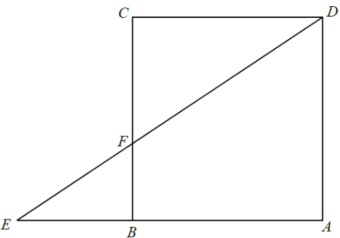

平面幾何 · 相似三角形

$$BF=\sqrt{EF^{2}-BE^{2}}=\sqrt{25-16}=3\text{ cm}$$
在 $\triangle EAD$ 中，$B$ 在 $EA$ 上、$F$ 在 $ED$ 上，且 $BF\parallel AD$，故
$$\triangle EBF\sim\triangle EAD$$
設邊長 $AD=AB=s$，則 $EA=s+4$：
$$\frac{4}{s+4}=\frac{3}{s}\;\Rightarrow\;4s=3s+12\;\Rightarrow\;s=12$$
$$\frac{EF}{ED}=\frac{EB}{EA}=\frac{4}{16}=\frac{1}{4}$$
故 $ED=4\times5=20$，$DF=ED-EF=20-5=15\text{ cm}$。